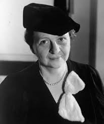

Biography
Frances Perkins was an American sociologist, but she was most known for being the first female member of the US Cabinet. She was the Secretary of Labor while her friend, Franklin D. Rosevelt was president.
Frances Perkins went to Mount Holyoke College, where she earned a Bachelor of Arts degree in chemistry and physics in 1902. She also received a master's degree in political science in 1910, from Columbia University . She also attended University of Pennsylvania's Wharton School for economics and sociology in 1918. Perkins held a variety of teaching positions, including teaching chemistry at Ferry Hall School from 1904-1906.
Perkins graduating was an astounding feat considering, on 2.8% of American women attended college, let alone graduated, especially with a degree.